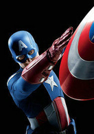
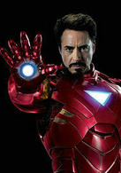
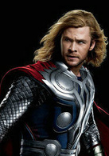
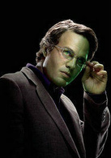
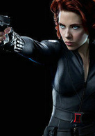
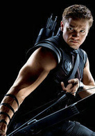

top
top
 武器：盾
异能：超常的体力、耐力和行动速度
饰演者：克里斯·埃文斯
美国队长是创作于二战时代的老牌英雄，最著名的反法西斯斗士之一。他本是瘦弱的青年史蒂夫·罗杰斯，接受了超级士兵改造手术，成为唯一成功的实验品，身体各项素质达到人类极限。他没有真正的超能力，虽然使用着坚不可摧的特制盾牌，但他最大的武器当属勇气、毅力和爱国精神。二战结束前夕他掉在冰海中休眠，几十年后才被现代英雄找到。苏醒的罗杰斯继续为了正义而战，但当代世界已经不像昔日一样善恶分明，他也不时被人们视为落后于时代的活化石作为Marvel少数近乎道德完人的英雄之一，美国上尉以自己与现实竞争的特点赢得了读者的关注。
 武器：钢铁侠战衣
异能：刀枪不入，飞行战斗
饰演者：小罗伯特-唐尼
开发军火起家的百万富翁花花公子托尼·斯达克，经历生死考验后决心把聪明才智用在造福人类上，为自己设计了一系列的高科技装甲，成为当时最受瞩目的英雄之一。斯塔克精明风趣、过着令书中人和读者都羡慕的潇洒生活，但他同时也面临着身体和精神上的巨大压力；虽然事业有成，遨游政、经、军界，却也历经多次重伤、破产、黑化、被控诉。他为世界和平和整个超级英雄事业做出过不可磨灭的贡献，又因为自信过甚而试图控制其他超人类，几乎身败名裂。他就是如此一个聪明、正直而又冲动、彷徨的商人，但其英雄本质仍然不会磨灭。
 武器：雷神之锤
异能：阿斯加德之神（北欧司雷神），神锤雷霆万钧，力量无敌
饰演者：克里斯·海姆斯沃斯
来自现实中的北欧神话，Marvel对其身份进行了一些现代性的设计，在保留神话色彩的同时把他连同全世界几十个古代神话体系引入了漫画时空。托尔是神界最强大，最有英雄气概的成员之一，最初由于高傲而被贬到凡间，此后逐渐与人类为友，与各种恶势力抗争。他虽然是神，但不是全能的，也要面对形形色色的困境：与世俗规则的互不理解，与神族同胞的种种分歧，与宇宙更高势力的抗争……作为一个超凡而又漫步凡间的英雄，他将继续在Marvel世界呼风唤雨
 武器：变身为巨人
异能：无限能力，所向披靡
饰演者：马克·鲁弗洛
绿巨人浩克是60年代 Marvel最早创作的漫画主角之一，是一位科学家布鲁斯·班纳受到自己开发的武器辐射而变异成的生物，具有非常巨大的力量，并以“越愤怒，越强壮”闻名。浩克代表了一种无视一切障碍、难以自控的野性，尤其是与循规蹈矩的文明人形成对比，因此他一直受到社会的敌视，与其他英雄的关系也时好时坏，但同时他仍然保持着锄强扶弱的英雄特质。浩克长期以来受到广泛的喜爱，人们把自己反抗权威、发泄不满的感情寄托在他身上!
 武器：手枪
异能：聪明，精通多种语言，擅长格斗
饰演者：斯嘉丽·约翰逊
黑寡妇本名娜塔莎罗曼诺夫，由斯坦李和唐氏兄弟共同创造的人物。从小是孤儿，由前苏联政府抚养，后被训练成一名超级特工，反叛前苏联后加入复仇者。
 武器：弓箭
异能：敏捷、神速，一流的箭术
饰演者： 杰瑞米·雷纳 他原是个在马戏团长大的孤儿，在电视上受到钢铁侠启发之下打扮成超级英雄，加入复仇者。擅使弓箭，百发百中，曾与黑寡妇是恋人的关系。在本片中开始被洛基控制神智，后被黑寡妇救下，与其他复仇者成员共同抗敌。